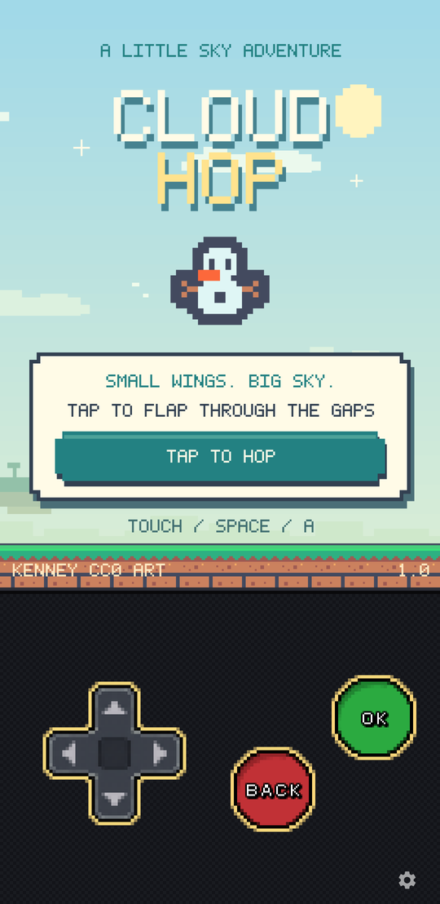
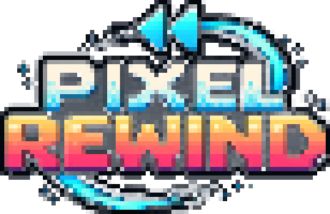
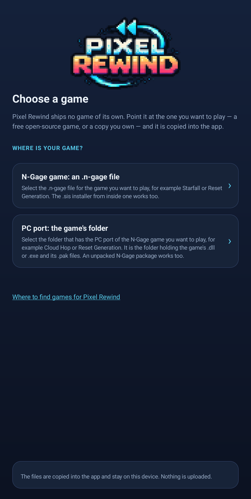
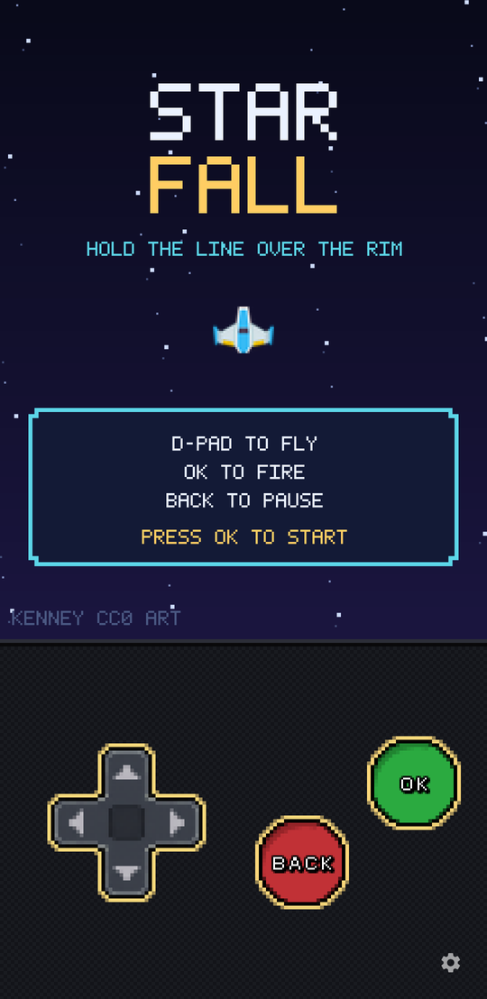
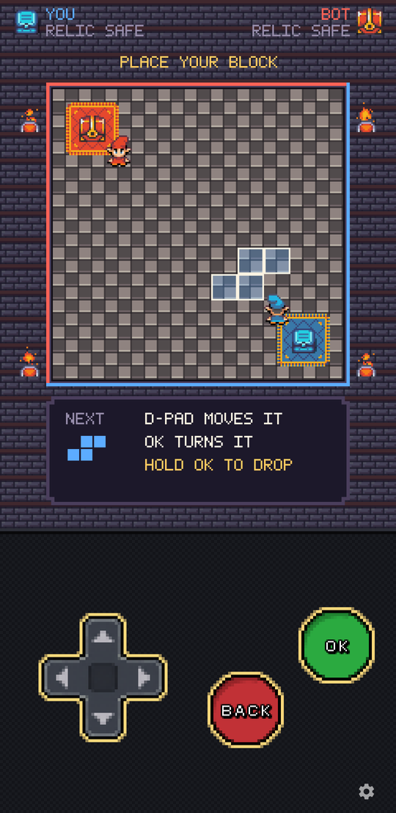
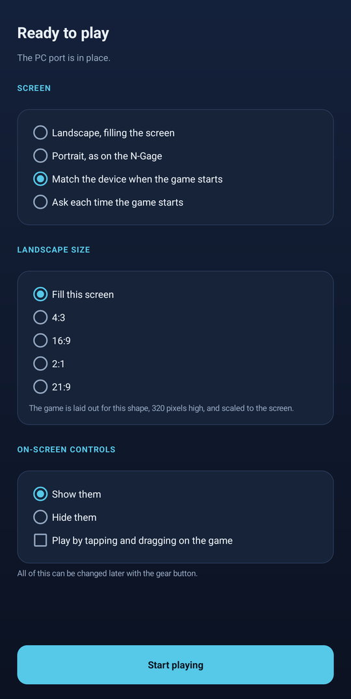

Cloud Hop
A tap-to-fly game in landscape, played with the screen itself.
Art by Kenney (CC0)

A player for N-Gage-era games. It ships no game of its own — you bring the one you want to play, and it runs the original engine rather than a remake of it.
Android · Linux
Bring your own game
Pixel Rewind ships no game content at all. On first start it asks where your game is — a free open-source one, or a copy you already own — and copies what it needs into its own storage. After that it starts straight into the game.
It takes an N-Gage .n-gage file, or the folder holding a PC port's executable and its data files. Nothing you import is uploaded anywhere; it stays on the device.
Bring only games you have the right to use — a copy you own, or one that is freely and lawfully distributed. Using Pixel Rewind any other way is a breach of the terms of use. We supply no games, and we cannot help you find one.

Start here
If you don't have a game to bring, these are built to run on Pixel Rewind and cost nothing. Each is open source, with artwork that is free to use.

A tap-to-fly game in landscape, played with the screen itself.
Art by Kenney (CC0)

A top-down space shooter in portrait, built around the D-pad and buttons.
Art by Kenney (CC0)

Place a block, then walk the path you made. Steal the relic and run home.
Art from Super Retro World by Gif, Noiracide and Romi
How it works
Pixel Rewind does not rewrite or reimplement the games it plays. It runs their original compiled engine inside a CPU emulator and supplies the handful of operating-system calls that engine expects. Every frame, every sound and every rule comes from the original binary, so behaviour matches the original rather than approximating it.
On your device
These games were drawn for a small portrait screen and a numeric keypad. Pixel Rewind lays them out for the screen you actually have, and gives you controls that suit it.

Online
Some of these games shipped with online play against servers that were switched off years ago. Where that is the case, Pixel Rewind can connect to a community-run replacement instead, so the original online modes work again.
Online play is optional. Nothing about it is required to play on your own, and accounts are not open yet.